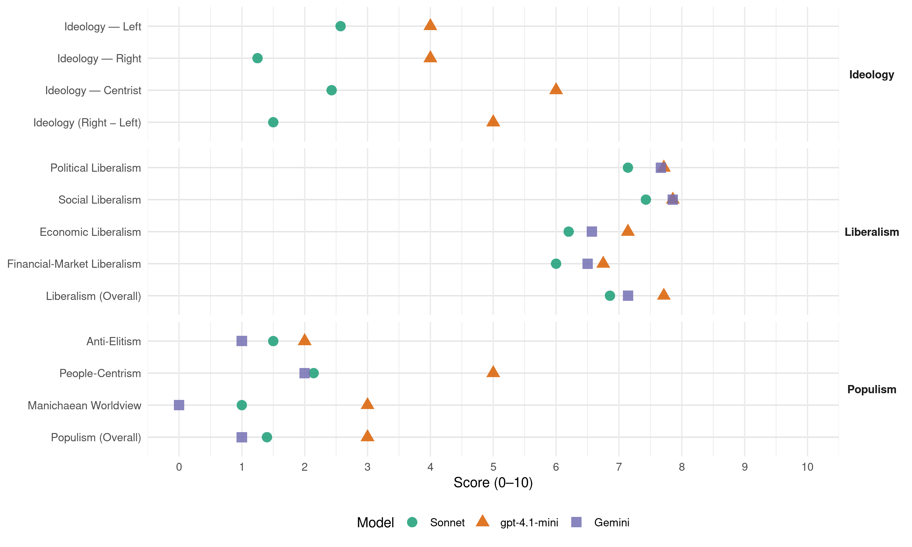

CD&V (Belgium, 2019)
manifesto_id 21521_201905
Get full text: This site shows derived annotations and short verbatim quotes only. The full manifesto text is © Manifesto Project / WZB — obtain it via manifesto-project.wzb.eu using the manifesto_id above.
Headline scores
| Dimension | Sonnet | gpt-4.1-mini | Gemini |
|---|---|---|---|
| Populism (Overall) | 1.4 | 3.0 | 1.0 |
| Anti-Elitism | 1.5 | 2.0 | 1.0 |
| People-Centrism | 2.1 | 5.0 | 2.0 |
| Manichaean Worldview | 1.0 | 3.0 | 0.0 |
| Ideology (Right − Left) | 1.5 | 5.0 | – |
| Liberalism (Overall) | 6.9 | 7.7 | 7.1 |
| Political Liberalism | 7.1 | 7.7 | 7.7 |
| Social Liberalism | 7.4 | 7.9 | 7.9 |
| Economic Liberalism | 6.2 | 7.1 | 6.6 |
| Financial-Market Liberalism | 6.0 | 6.8 | 6.5 |
Evidence per dimension
Economic Liberalism
Gemini · score 6.0 · verified · chunk 1
“samenwerking met de VDAB”
We investeren verder in de samenwerking met de VDAB. Elke schoolverlater is voor het afstuderen ingeschreven bij de VDAB
Gemini · score 6.0 · verified · chunk 2
“een gelijk speelveld tussen omroep en producent”
waardoor een optimale exploitatie kan worden gerealiseerd en een gelijk speelveld tussen omroep en producent wordt gegarandeerd.. De UiTpas, een vrijetijdskaart
Gemini · score 6.0 · verified · chunk 3
“vrijmaking van het binnenlands reizigersverkeer”
implementeren de Europese verplichting tot vrijmaking van het binnenlands reizigersverkeer zo dat we naar een openbaar vervoer evolueren
Gemini · score 7.0 · verified · chunk 4
“taken voor de vrije markt”
en maatregelen voor vraagbeheer. Dit zijn bij uitstek taken voor de vrije markt. Prosumenten krijgen versneld
Gemini · score 7.0 · verified · chunk 5
“vrij verkeer”
zelfstandige ondernemers aan moedigen gebruik te maken van hun vrij verkeer. Migrerende zelfstandigen moeten op dezelfde
Gemini · score 7.0 · verified · chunk 6
“concurrentie op de telecommarkt aanwakkeren”
cyberveiligheidsbeleid versterken en investeren in capaciteitsopbouw en ‘knowhow’. Verder willen we de concurrentie op de telecommarkt aanwakkeren, in het belang van de consument
Gemini · score 7.0 · verified · chunk 7
“vrij verkeer van personen, diensten”
multinationale ondernemingen hun belastingbijdrage leveren. Niet alleen omdat vrij verkeer van personen, diensten, goederen en kapitaal een basisrecht is in
gpt-4.1-mini · score 7.0 · verified · chunk 1
“investeren we in meer gezinsmodulering van de sociale toeslagen”
De volgende legislatuur investeren we in meer gezinsmodulering van de sociale toeslagen. We zorgen, wanneer er binnen de kinderbijslag financiële ruimte is, voor de invoering van leeftijdstoeslagen.
gpt-4.1-mini · score 7.0 · verified · chunk 2
“De samenwerking tussen cultuur en economie moet nog versterkt worden”
De samenwerking tussen cultuur en economie moet nog versterkt worden. We denken aan ondersteuning van nieuwe organisatievormen en nieuwe businessmodellen.
gpt-4.1-mini · score 8.0 · verified · chunk 3
“markt, concurrentie, ondernemerschap, privatisering, belasting, handel”
free markets, competition, free enterprise, deregulation/privatization, tax efficiency, trade openness. Topic check: the quote must mention market, competition, business, enterprise, tax, trade, regulation, privatization, or related economic-policy terms.
gpt-4.1-mini · score 7.0 · verified · chunk 4
“We bestrijden oligopolies en kijken strenger toe op prijsstijgingen in gereglementeerde markten zoals energie en telecom”
We willen een actief beleid om de inflatie onder controle te houden. We bestrijden oligopolies en kijken strenger toe op prijsstijgingen in gereglementeerde markten zoals energie en telecom. Prijsstijgingen moeten te verantwoorden zijn door een reële onderliggende kost. We zorgen dat minstens 3% van het bbp besteed wordt aan onderzoek en ontwikkeling en zetten in op technologische groeisectoren.
gpt-4.1-mini · score 7.0 · verified · chunk 5
“markt, concurrentie, onderneming, belasting, handel, regulering, privatisering”
…We kiezen voor een sterke en rechtvaardige sociale zekerheid voor zelfstandigen die gezond ondernemen vergemakkelijkt. De laatste jaren zijn belangrijke stappen gezet, zoals gelijke minimumpensioenen, de uitbreiding van het overbruggingsrecht en de moederschapsrust en de pensioenovereenkomst voor zelfstandigen actief in een eenmanszaak. Zelfstandigen opereren in een economisch klimaat dat hun inkomsten bepaalt. Met het in 2015 hervormde bijdragesysteem kunnen de sociale bijdragen nauw aansluiten bij de actuele inkomenssituatie van elke zelfstandige, daar waar voordien de inkomsten van drie jaar terug werden gehanteerd. Indien zelfstandigen in staat van behoefte verkeren, kunnen ze tijdelijk worden vrijgesteld van bijdragebetaling. Deze procedure wordt verkort en geautomatiseerd. De focus wordt verlegd van behoeftigheid naar levensvatbare bedrijven die tijdelijke moeilijkheden ondervinden. Loopbanen hebben meer en meer een gemengd karakter. Toch is de arbeidsmobiliteit van en naar het zelfstandigenstatuut nog gering. Tussen 2012 en 2014 stapte 1% van de loontrekkenden over op het statuut van zelfstandige en 2% van zelfstandige naar loontrekkende. Overgangen tussen en combinaties van verschillende statuten (bv. zelfstandige en loontrekkende) moeten zo weinig mogelijk complicaties geven inzake sociale bescherming.
gpt-4.1-mini · score 7.0 · verified · chunk 6
“CD&V pleit voor een vereenvoudiging van het belastingsysteem”
Ons belastingsysteem is te complex. Vandaag bestaan er te veel uitzonderingen die op hun beurt ook weer uitzonderingen hebben. Kortom: fiscale koterijen. Elke maatregel op zich is goed bedoeld, maar globaal leiden ze tot een grote complexiteit. Vandaag zijn er 829 vakjes op de belastingbrief terug te vinden. De Vlaming heeft gemiddeld twee tot vijf uur nodig om zijn belastingaangifte in te vullen. Dat is een slechte score in vergelijking met andere landen. Een complexe aangifte leidt ook tot een mattheüseffect: zij die zich gespecialiseerde ondersteuning kunnen veroorloven, gaan hier beter mee om dan zij die dit niet kunnen. Om dit probleem op te lossen, pleit CD&V voor een vereenvoudiging van het belastingsysteem, een meer leesbare belastingaangifte en de toevoeging van een educatief luik aan de aangifte.
gpt-4.1-mini · score 7.0 · verified · chunk 7
“We pleiten voor een eerlijke interne markt die een gelijk speelveld creëert”
…Daarnaast willen we bouwen aan een eerlijke interne markt die een gelijk speelveld creëert en waar ook multinationale ondernemingen hun belastingbijdrage leveren. Niet alleen omdat vrij verkeer van personen, diensten, goederen en kapitaal een basisrecht is in de EU…
Sonnet · score 6.0 · verified · chunk 1
“fiscaal gunstig kader om dergelijke investeringen”
We werken hiervoor samen met bedrijven en sectoren en scheppen een fiscaal gunstig kader om dergelijke investeringen vanuit (onder meer) bedrijven te stimuleren.
Sonnet · score 5.0 · mixed · chunk 2
“marktwerking”
objectieve doorlichting van het prijsverloop, het prijsniveau, de marges en de marktwerking. Dit mag niet leiden tot een verschraling van de markt
Sonnet · score 6.0 · mixed · chunk 3
“vrije keuze laten over hoe ze willen wonen”
We willen mensen de vrije keuze laten over hoe ze willen wonen. Of iemand zo snel mogelijk een eigen woning wil verwerven of langer wil genieten van de flexibiliteit op de huurmarkt.
Sonnet · score 6.0 · verified · chunk 4
“Dit zijn bij uitstek taken voor de vrije markt”
variabele uurtarieven en maatregelen voor vraagbeheer. Dit zijn bij uitstek taken voor de vrije markt.
Sonnet · score 6.0 · verified · chunk 5
“competitieve ondernemers”
3.3.1. Economisch beleid Competitieve ondernemers Loonkost De maatregelen die sinds 2013 werden genomen
Sonnet · score 6.0 · verified · chunk 6
“marktwerking in België voldoende kan spelen”
Het is belangrijk dat de marktwerking in België voldoende kan spelen, zodat onze consumenten van de meest gunstige prijzen kunnen genieten, zonder in te boeten op werkgelegenheid en kwaliteit.
Sonnet · score 7.0 · verified · chunk 7
“vrijhandel op de wereldmarkt”
Europese handels- en investeringsakkoorden garanderen niet alleen de verdere integratie van de interne markt, maar ook vrijhandel op de wereldmarkt.
Financial-Market Liberalism
Gemini · score 7.0 · verified · chunk 4
“groene overheidsobligaties met een marktconform”
extra kapitaal ophalen door middel van groene overheidsobligaties met een marktconform rendement. Iedereen moet in zijn
Gemini · score 6.0 · verified · chunk 5
“transparantie van deze producten”
financiële producten zijn, zetten we in op transparantie van deze producten en de daaraan gekoppelde voorwaarden
Gemini · score 6.0 · verified · chunk 6
“bescherming van de consument”
belangrijke dienstverleningsfunctie ten volle blijven vervullen, met een bijzondere aandacht voor de bescherming van de consument. De consument moet over correcte
Gemini · score 7.0 · verified · chunk 7
“afwerking van de Bankenunie door”
de verdieping van de Economische en Monetaire Unie bij tot een welvarend Europa. De afwerking van de Bankenunie door gemeenschappelijk verantwoordelijkheid op te nemen voor
gpt-4.1-mini · score 6.0 · verified · chunk 4
“We pleiten voor transparantie van deze producten en de daaraan gekoppelde voorwaarden en op financiële geletterdheid”
We versterken de collectieve tweede pijler voor werknemers door een stapsgewijze verplichting. Omdat aanvullende pensioen producten financiële producten zijn, zetten we in op transparantie van deze producten en de daaraan gekoppelde voorwaarden en op financiële geletterdheid. Er moet werk gemaakt worden van meer kostentransparantie.
gpt-4.1-mini · score 7.0 · verified · chunk 5
“financiële producten, transparantie, financiële geletterdheid, kostentransparantie”
…Deze hervorming gebeurt altijd in samenspraak met de sector en de sociale partners. Omdat aanvullende pensioen prod ucten financiële producten zijn, zetten we in op transparantie van deze producten en de daaraan gekoppelde voorwaarden en op financiële geletterdheid. Er moet werk gemaakt worden van meer kostentransparantie.
gpt-4.1-mini · score 7.0 · verified · chunk 6
“CD&V pleit voor de uitvoering van de aanbevelingen van de parlementaire onderzoekscommissies”
De strijd tegen fiscale fraude en ontwijking moet op een kordate manier worden aangepakt. CD&V pleit voor de uitvoering van de aanbevelingen van de parlementaire onderzoekscommissies. Volgende maatregelen willen we prioritair uitvoeren: Een algemeen mechanisme ter bescherming van klokkenluiders in de private en publieke sector. Internationale onthullingen waren immers mogelijk dankzij de moed van een enkele klokkenluider.
gpt-4.1-mini · score 7.0 · verified · chunk 7
“De oprichting van een Europees Monetair Fonds, de verdere afwerking van de Bankenunie”
…De oprichting van een Europees Monetair Fonds, de verdere afwerking van de Bankenunie door gemeenschappelijk verantwoordelijkheid op te nemen voor spaartegoeden aan de hand van een depositogarantiestelsel en de Kapitaalmarktenunie waardoor kmo’s nieuwe bronnen van financiering bekomen, zijn prioriteiten…
Sonnet · score 5.0 · verified · chunk 2
“niet-marktconforme vergoedingen voor zaakvoerders”
het aan banden leggen van niet-marktconforme vergoedingen voor zaakvoerders en voor het gebruik van infrastructuur
Sonnet · score 6.0 · verified · chunk 3
“groene overheidsobligaties met een marktconform rendement”
De overheid kan extra kapitaal ophalen door middel van groene overheidsobligaties met een marktconform rendement.
Sonnet · score 6.0 · verified · chunk 4
“groene overheidsobligaties met een marktconform rendement”
De overheid kan extra kapitaal ophalen door middel van groene overheidsobligaties met een marktconform rendement.
Sonnet · score 6.0 · verified · chunk 5
“transparantie van deze producten en de daaraan”
zetten we in op transparantie van deze producten en de daaraan gekoppelde voorwaarden en op financiële geletterdheid. Er moet werk gemaakt worden van meer kostentransparantie.
Sonnet · score 5.0 · mixed · chunk 6
“financiële transactietaks Europees ingevoerd zien”
We willen de financiële transactietaks Europees ingevoerd zien. Er moet een internationaal gecoördineerde belasting komen op financiële transacties.
Sonnet · score 7.0 · verified · chunk 7
“Kapitaalmarktenunie waardoor kmo’s nieuwe bronnen van financiering”
de verdere afwerking van de Bankenunie door gemeenschappelijk verantwoordelijkheid op te nemen voor spaartegoeden aan de hand van een depositogarantiestelsel en de Kapitaalmarktenunie waardoor kmo’s nieuwe bronnen van financiering bekomen
Political Liberalism
Gemini · score 8.0 · verified · chunk 1
“vrijheid van onderwijs in al zijn aspecten”
We zijn ervan overtuigd dat de vrijheid van onderwijs in al zijn aspecten essentieel is voor de hoge kwaliteit van ons onderwijs.
Gemini · score 8.0 · verified · chunk 2
“essentieel is voor de lokale democratie”
en regionale berichtgeving, dichtbij de mensen, een verbindende rol heeft en essentieel is voor de lokale democratie en samenleving. Meer concreet moet een volgende
Gemini · score 7.0 · verified · chunk 3
“vroegtijdige zorgplanning in te schrijven in de patiëntenrechtenwet”
rust bij de patiënt. Door de vroegtijdige zorgplanning in te schrijven in de patiëntenrechtenwet, zetten we in op levenskwaliteit tot op het
Gemini · score 7.0 · verified · chunk 4
“het stakingsrecht moet behoedzaam”
diensten bij stakingen. Het stakingsrecht moet behoedzaam en als laatste middel ingezet
Gemini · score 8.0 · verified · chunk 6
“respect voor de fundamentele grondrechten”
moed van een enkele klokkenluider. De implementatie van deze klokkenluidersregeling moet gepaard gaan met respect voor de fundamentele grondrechten; Volledige transparantie over fiscale
Gemini · score 8.0 · verified · chunk 7
“democratie, rechtsstatelijkheid, fundamentele vrijheden”
meer dan regels en voorschriften. Europa betekent actief bouwen aan democratie, rechtsstatelijkheid, fundamentele vrijheden en mensenrechten. Wij staan voor een gedeelde
gpt-4.1-mini · score 8.0 · verified · chunk 1
“de vrijheid van onderwijs in al zijn aspecten essentieel is”
We zijn ervan overtuigd dat de vrijheid van onderwijs in al zijn aspecten essentieel is voor de hoge kwaliteit van ons onderwijs. We vullen deze vrijheid van onderwijs ruim in: zowel de vrije schoolkeuze van ouders als de vrijheid van scholen wat betreft de stichting (oprichting van scholen), richting (pedagogisch project) en inrichting (de organisatie en het personeelsbeleid) van onderwijs.
gpt-4.1-mini · score 8.0 · verified · chunk 2
“We streven naar een pluriform en evenwichtig medialandschap in stand houden”
We willen een pluriform en evenwichtig medialandschap in stand houden, zodat alle Vlamingen gewaarborgde en betaalbare toegang hebben tot een divers en kwaliteitsvol aanbod.
gpt-4.1-mini · score 7.0 · verified · chunk 3
“in de patiëntenrechtenwet, de wet m.b.t. palliatieve zorg en de euthanasiewet”
kennis hebben van levenseindezorg. Daarom moet in de opleiding van elk zorgberoep er een verplicht vak worden voorzien dat de patiëntenrechtenwet, de wet m.b.t. palliatieve zorg en de euthanasiewet behandelt. Beginnend leven We hebben bijzondere aandacht voor levenloos geboren kinderen.
gpt-4.1-mini · score 8.0 · verified · chunk 4
“De sociale partners, de instellingen van sociale zekerheid en de overheid, als beheerders van de sociale zekerheid, de duurzaamheid garanderen”
We garanderen een kwaliteitsvolle sociale bescherming door de financiering op orde te houden. Voor CD&V moeten de sociale partners, de instellingen van sociale zekerheid en de overheid, als beheerders van de sociale zekerheid, de duurzaamheid garanderen en ze beheren als een goede huisvader. We behouden ook de rol van de sociale organisaties, naast de overheid, bij het beheer en de uitvoering.
gpt-4.1-mini · score 7.0 · verified · chunk 5
“democratie, rechten, verkiezingen, rechtbanken, media”
…moeten grondig geïnformeerd worden over de gevolgen en dezelfde pensioenbescherming genieten. De opgebouwde wettelijke en aanvullende pensioenrechten moeten bij echtscheiding of ontbinding van de wettelijke samenwoning gelijk worden verdeeld onder de partners. We versterken de collectieve tweede pijler voor werknemers door een stapsgewijze verplichting. Zo bouwt iedereen, ongeacht de sector, op termijn een aanvullend pensioen op met een voldoende hoog bijdrageniveau. We onderzoeken een aanvullend pensioen voor statutair overheidspersoneel. De uitbetaling in rente mag niet worden ontmoedigd. Er moet een solidariteitsfonds worden voorzien om ondersteuning te bieden bij tekorten in aanvullende pensioenplannen en onvermogen van inrichters en pensioeninstellingen. Deze hervorming gebeurt altijd in samenspraak met de sector en de sociale partners. Omdat aanvullende pensioen prod ucten financiële producten zijn, zetten we in op transparantie van deze producten en de daaraan gekoppelde voorwaarden en op financiële geletterdheid. Er moet werk gemaakt worden van meer kostentransparantie. 3.2.3. Zelfstandigenstatuut Algemene doelstellingen van het zelfstandigenstatuut Een ondernemende samenleving draagt bij aan prod uctiviteits- en welvaartsgroei. Maatschappelijke erkenning voor ondernemers staat centraal. Ondernemen is immers risico nemen en vergt moed. Dat mag niet worden onderschat. Ondernemerschap groeit. Het aandeel zelfstandigen neemt toe, ook bij vrouwen en jongeren. Dat willen we zo houden. Tegelijk is de zelfstandigenpopulatie diverser geworden met meer zelfstandige bedrijfsleiders en freelancers. Elke vorm van activiteit, in het bijzonder in de nieuwe (platform)economieën, moet onder het werknemers- dan wel zelfstandigenstatuut vallen. Tegelijk moeten bijzondere statuten die onmiddellijk in concurrentie treden met zelfstandigen worden geëvalueerd. Flexibilisering mag niet leiden tot een negatieve impact op de financiering van het sociaal statuut en sociale onderbescherming. We kiezen voor een sterke en rechtvaardige sociale zekerheid voor zelfstandigen die gezond ondernemen vergemakkelijkt. De laatste jaren zijn belangrijke stappen gezet, zoals gelijke minimumpensioenen, de uitbreiding van het overbruggingsrecht en de moederschapsrust en de pensioenovereenkomst voor zelfstandigen actief in een eenmanszaak. Zelfstandigen opereren in een economisch klimaat dat hun inkomsten bepaalt. Met het in 2015 hervormde bijdragesysteem kunnen de sociale bijdragen nauw aansluiten bij de actuele inkomenssituatie van elke zelfstandige, daar waar voordien de inkomsten van drie jaar terug werden gehanteerd. Indien zelfstandigen in staat van behoefte verkeren, kunnen ze tijdelijk worden vrijgesteld van bijdragebetaling. Deze procedure wordt verkort en geautomatiseerd. De focus wordt verlegd van behoeftigheid naar levensvatbare bedrijven die tijdelijke moeilijkheden ondervinden. Loopbanen hebben meer en meer een gemengd karakter. Toch is de arbeidsmobiliteit van en naar het zelfstandigenstatuut nog gering. Tussen 2012 en 2014 stapte 1% van de loontrekkenden over op het statuut van zelfstandige en 2% van zelfstandige naar loontrekkende. Overgangen tussen en combinaties van verschillende statuten (bv. zelfstandige en loontrekkende) moeten zo weinig mogelijk complicaties geven inzake sociale bescherming. Langetermijnvisie op het zelfstandigenstatuut Om ondernemerschap verder te stimuleren, versterken we de sociale bescherming voor zelfstandigen. We streven naar een zo groot mogelijke convergentie om een vlotte doorstroom tussen statuten toe te laten. Kenbaarheid is belangrijk. Zelfstandigen moeten geïnformeerd worden over hun sociale rechten en ondersteuningsmogelijkheden om maximale opname van rechten te garanderen. De versterking willen we, binnen een voorzichtig budgettair beleid, realiseren door de aanwezige middelen en overschotten in het zelfstandigenstelsel te benutten. Tegelijk moet er voldoende onderlinge solidariteit zijn tussen ‘kleine’ en ‘grotere’ zelfstandigen en tussen eenmanszaken en vennootschappen, zonder de keuze voor een vennootschapsvorm af te remmen. Oneigenlijk gebruik van het zelfstandigenstatuut moet worden vermeden. CD&V pleit voor een structurele aanpak van nulinkomens met gegevensuitwisseling tussen de bevoegde administraties. Ook moeten frauduleuze (vennootschaps)constructies met oneigenlijke toegang tot sociale bescherming worden aangepakt. CD&V wil ondernemers ondersteunen om te groeien, kapitaal op te bouwen, te innoveren en personeel aan te werven. We voeren een ondersteunend beleid naar alle (startende) ondernemers. Vrouwelijke zelfstandigen zijn nog steeds in de minderheid, al zijn we op de goede weg. Omdat we het groeiend vrouwelijk ondernemerschap willen blijven stimuleren, zetten we in op een vrouwvriendelijke ondernemerscultuur en ondernemingszin in het onderwijs. We blijven bijzonder aandachtig voor de factoren die vrouwen belemmeren te ondernemen. Vrouwelijke ondernemers ondersteunen we via netwerken (zoals Markant), media, vrouwelijke mentoren en rolmodellen en de combinatie van gezin en ondernemerschap. Ook ondernemen met een etnisch diverse achtergrond vraagt een gediversifieerde (traject)begeleiding op maat die in het bijzonder inzet op de ondernemerskansen (via bijkomende opleiding en werkervaring en marktinformatie en -kennis). Resterende culturele drempels moeten worden weggewerkt. CD&V wil werkgevers financieel ondersteunen bij de aanwerving van personeel, in het bijzonder uit kwetsbare doelgroepen. Werkgevers die aanwerven moeten een duw in de rug krijgen via de verlenging en automatisering van de RSZ-vermindering voor de eerste aanwervingen. De veranderende arbeidsmarkt vraagt een permanente opvolging van vraag en aanbod, met aandacht voor de bijzonderheden van kmo’s en wisselwerkingen tussen gewestelijke arbeidsbemiddelingsdiensten en ondernemers. Ouderschap en (mantel)zorg mogen ondernemerschap niet in de weg staan. Voldoende, flexibele kinderopvang en buitenschoolse activiteiten, aangevuld met aangepaste gezinsondersteuning en vervangend ondernemerschap, moeten zelfstandige ouders en mantelzorgers in staat stellen hun zaak draaiende te houden. CD&V wil zelfstandige en loontrekkende moeders een gelijke moederschapsrust van vijftien weken toekennen. Zelfstandigen die een pleegkind in het gezin opvangen, kennen we een jaarlijks pleegzorgverlof van zes dagen toe. Partners die beslis(t)(s)en samen in de onderneming actief te zijn, ook in de eerste fase van een overname, verdienen sociale bescherming. Anomalieën uit het verleden worden gecompenseerd. Daarnaast verdient ook de deeltijds buitenhuis werkende partner sociale bescherming. Omdat de familiale en (bed rijfs)economische situatie van echtgenoten of partners zich niet in het strikte keurslijf van een bepaalde ondernemingsvorm laat dwingen, staat een keuze op maat voorop. Het ‘maxistatuut’ moet een van de sa menu itbatingsvormen blijven. Daarnaast wil CD&V het voor koppels mogelijk maken volwaardig als zelfstandigen (in hoofdberoep) samen te werken. CD&V kiest voor duurzame loopbanen voor zelfstandigen, waardoor iedereen aan boord kan blijven tot de pensioenleeftijd. Werkbaar werk, met aandacht voor preventie en welzijn op het werk, staat voorop. Via opleiding, herscholing en transitie kan de zelfstandige tijdig een andere weg inslaan om de loopbaan, in het geval van moeilijke arbeidsomstandigheden, langer vol te houden. Bij arbeidsongeschiktheid zet CD&V in op re-integratie (met desgevallend een heroriëntering). Zelfstandigen moeten ondersteund worden om preventiemaatregelen te nemen en een re-integratietraject te volgen in geval van langdurige arbeidsongeschiktheid. We willen dit mogelijk maken met een gezondheidsbudget. We kiezen voor convergentie in de arbeidsongeschiktheidsregelingen. We wensen ook de anomalieën bij de aanvullende verzekeringen gewaarborgd inkomen te ondervangen, opdat elke zelfstandige, ongeacht de leeftijd en medische toestand, een beroep kan doen op aanvullende bescherming. We onderzoeken hoe het sociaal luik van het Vrij Aanvullend Pensioen daartoe kan bijdragen. Zij die voor een door- of herstart staan, moeten zich gesteund weten. CD&V wil het overbruggingsrecht meer activerend maken en het automatisch toekennen. Aan het einde van de loopbaan verdienen zelfstandigen een sterk wettelijk pensioen dat een goed inkomen, zonder risico op armoede, garandeert. We vergroten de spanning tussen het minimum- en maximumpensioen door een gefaseerde invoering van een pensioenformule voor zelfstandigen die overeenstemt met die van de werknemers. Dit is een ingrijpende wijziging. Vanzelfsprekend gelden redelijke overgangstermijnen. We voorzien gelijkstellingen in de pensioenopbouw voor de perioden dat het zelfstandigen niet voor de wind gaat. Zo wordt ook voor die periodes een voldoende opbouw van pensioenrechten gegarandeerd. Om het risico op armoede te beperken, breiden we de welvaartspremie voor gepensioneerde zelfstandigen uit en versterken ze. Omdat de combinatie van wettelijke en aanvullende pensioenen meer robuust is in termen van risicospreiding, willen we het maximaal bijdragepercentage voor het Vrij Aanvullend Pensioen optrekken. In het kader van de Europese arbeidsmobiliteit moedigen we zelfstandige ondernemers aan gebruik te maken van hun vrij verkeer. Migrerende zelfstandigen moeten op dezelfde manier worden behandeld als nationale zelfstandigen wat de toegang tot arbeid, werkgelegenheid en sociale en fiscale voordelen betreft. Deze bewegingen mogen echter niet leiden tot een concurrentieverstoring, oneigenlijk gebruik van het sociaal statuut en druk op ons nationaal solidariteitsmechanisme. Dat is des te meer het geval wanneer geen bijdragen betaald worden in het land van herkomst of wanneer aan ‘forumshopping’ wordt gedaan door een vestigingsplaats te kiezen met lage(re) sociale bijdragen. De strijd tegen schijnzelfstandigheid blijft daarom prioritair. De Europese Pijler voor Sociale Rechten voorziet stimulansen voor een adequate sociale bescherming. We pleiten voor de omzetting van de Pijler in nationale wetgeving. We willen ook een (digitaal) loket voor grensoverschrijdende mobiliteit om arbeidsmobiele zelfstandigen zicht te geven op de opgebouwde rechten en een doorgedreven gebruik van het Europees verwijzingsrepertorium dat de vlotte uitwisseling van gegevens vergemakkelijkt. Door de detacheringsvoorwaarden beter bekend te maken, met een goede samenwerking tussen de verschillende autoriteiten, blijft de strijd tegen sociale fraude op de agenda.
gpt-4.1-mini · score 8.0 · verified · chunk 6
“CD&V wil een doorgedreven informatisering van de processen binnen justitie”
Nabije, betaalbare en stipte justitie Een nabije justitie is belangrijk, zij het in een andere zin dan vroeger. Naast de fysieke nabijheid is het steeds meer een digitale nabijheid die we van justitie verwachten. CD&V wil een doorgedreven informatisering van de processen binnen justitie met als doel ‘the court of the future’ in de praktijk te brengen. Dit betekent ook extra investeren in nieuwe en moderne gerechtsgebouwen.
gpt-4.1-mini · score 8.0 · verified · chunk 7
“De waarden van politieke integriteit en goed bestuur vormen de hoeksteen voor CD&V”
…Politiek cynisme en onverschilligheid vormen niet alleen een bedreiging voor de integriteit van de politiek, maar ook voor de democratie zelf. De waarden van politieke integriteit en goed bestuur vormen de hoeksteen voor CD&V. We willen een nieuwe politiek ethiek uitdragen…
Sonnet · score 7.0 · verified · chunk 1
“vrijheid van onderwijs in al zijn aspecten”
We zijn ervan overtuigd dat de vrijheid van onderwijs in al zijn aspecten essentieel is voor de hoge kwaliteit van ons onderwijs. We vullen deze vrijheid van onderwijs ruim in
Sonnet · score 7.0 · verified · chunk 2
“essentieel is voor de lokale democratie”
lokale en regionale berichtgeving, dichtbij de mensen, een verbindende rol heeft en essentieel is voor de lokale democratie en samenleving
Sonnet · score 7.0 · verified · chunk 3
“meer autonomie en er is meer lokale inspraak”
De vervoersregio’s krijgen meer autonomie en er is meer lokale inspraak. We voorzien in voldoende middelen en een betere spreiding van de middelen.
Sonnet · score 7.0 · verified · chunk 4
“sociaal overleg in zowel de openbare als private sector”
Het sociaal overleg in zowel de openbare als private sector is voor CD&V cruciaal om mee vorm te geven aan en te zorgen voor draagvlak voor de noodzakelijke hervormingen.
Sonnet · score 7.0 · verified · chunk 5
“respect voor de grondrechten en de mensenrechten”
een ethisch kader voor artificiële intelligentie ontwikkelen met respect voor de grondrechten en de mensenrechten, in afwachting van een regulerend kader op Europees niveau
Sonnet · score 7.0 · verified · chunk 6
“democratisch evenwicht moeten de bevoegdheden justitie”
CD&V is er geen voorstander van om de bevoegdheden justitie en veiligheid samen te voegen onder één minister. Voor het behoud van een democratisch evenwicht moeten de bevoegdheden justitie en ordehandhaving gesplitst zijn
Sonnet · score 8.0 · verified · chunk 7
“bouwen aan democratie, rechtsstatelijkheid, fundamentele vrijheden”
Europa betekent actief bouwen aan democratie, rechtsstatelijkheid, fundamentele vrijheden en mensenrechten. Wij staan voor een gedeelde soevereiniteit.
Liberalism (Overall)
Gemini · score 7.0 · verified · chunk 1
“vrijheid van onderwijs in al zijn aspecten”
We zijn ervan overtuigd dat de vrijheid van onderwijs in al zijn aspecten essentieel is voor de hoge kwaliteit van ons onderwijs.
Gemini · score 7.0 · verified · chunk 2
“essentieel is voor de lokale democratie”
en regionale berichtgeving, dichtbij de mensen, een verbindende rol heeft en essentieel is voor de lokale democratie en samenleving. Meer concreet moet een volgende
Gemini · score 7.0 · verified · chunk 3
“vrijmaking van het binnenlands reizigersverkeer”
implementeren de Europese verplichting tot vrijmaking van het binnenlands reizigersverkeer zo dat we naar een openbaar vervoer evolueren
Gemini · score 7.0 · verified · chunk 4
“taken voor de vrije markt”
en maatregelen voor vraagbeheer. Dit zijn bij uitstek taken voor de vrije markt. Prosumenten krijgen versneld
Gemini · score 7.0 · verified · chunk 5
“vrij verkeer”
zelfstandige ondernemers aan moedigen gebruik te maken van hun vrij verkeer. Migrerende zelfstandigen moeten op dezelfde
Gemini · score 7.0 · verified · chunk 6
“respect voor de fundamentele grondrechten”
moed van een enkele klokkenluider. De implementatie van deze klokkenluidersregeling moet gepaard gaan met respect voor de fundamentele grondrechten; Volledige transparantie over fiscale
Gemini · score 8.0 · verified · chunk 7
“democratie, rechtsstatelijkheid, fundamentele vrijheden”
meer dan regels en voorschriften. Europa betekent actief bouwen aan democratie, rechtsstatelijkheid, fundamentele vrijheden en mensenrechten. Wij staan voor een gedeelde
gpt-4.1-mini · score 8.0 · verified · chunk 1
“de vrijheid van onderwijs in al zijn aspecten essentieel is”
We zijn ervan overtuigd dat de vrijheid van onderwijs in al zijn aspecten essentieel is voor de hoge kwaliteit van ons onderwijs. We vullen deze vrijheid van onderwijs ruim in: zowel de vrije schoolkeuze van ouders als de vrijheid van scholen wat betreft de stichting (oprichting van scholen), richting (pedagogisch project) en inrichting (de organisatie en het personeelsbeleid) van onderwijs.
gpt-4.1-mini · score 8.0 · verified · chunk 2
“We streven naar een pluriform en evenwichtig medialandschap in stand houden”
We willen een pluriform en evenwichtig medialandschap in stand houden, zodat alle Vlamingen gewaarborgde en betaalbare toegang hebben tot een divers en kwaliteitsvol aanbod.
gpt-4.1-mini · score 8.0 · verified · chunk 3
“in de patiëntenrechtenwet, de wet m.b.t. palliatieve zorg en de euthanasiewet”
kennis hebben van levenseindezorg. Daarom moet in de opleiding van elk zorgberoep er een verplicht vak worden voorzien dat de patiëntenrechtenwet, de wet m.b.t. palliatieve zorg en de euthanasiewet behandelt. Beginnend leven We hebben bijzondere aandacht voor levenloos geboren kinderen.
gpt-4.1-mini · score 7.0 · verified · chunk 4
“We garanderen een kwaliteitsvolle sociale bescherming door de financiering op orde te houden”
We garanderen een kwaliteitsvolle sociale bescherming door de financiering op orde te houden. Voor CD&V moeten de sociale partners, de instellingen van sociale zekerheid en de overheid, als beheerders van de sociale zekerheid, de duurzaamheid garanderen en ze beheren als een goede huisvader.
gpt-4.1-mini · score 7.0 · verified · chunk 5
“pensioenrechten, sociale zekerheid, transparantie, financiële producten”
…Deze hervorming gebeurt altijd in samenspraak met de sector en de sociale partners. Omdat aanvullende pensioen prod ucten financiële producten zijn, zetten we in op transparantie van deze producten en de daaraan gekoppelde voorwaarden en op financiële geletterdheid. Er moet werk gemaakt worden van meer kostentransparantie.
gpt-4.1-mini · score 8.0 · verified · chunk 6
“CD&V wil een doorgedreven informatisering van de processen binnen justitie”
Nabije, betaalbare en stipte justitie Een nabije justitie is belangrijk, zij het in een andere zin dan vroeger. Naast de fysieke nabijheid is het steeds meer een digitale nabijheid die we van justitie verwachten. CD&V wil een doorgedreven informatisering van de processen binnen justitie met als doel ‘the court of the future’ in de praktijk te brengen.
gpt-4.1-mini · score 8.0 · verified · chunk 7
“De waarden van politieke integriteit en goed bestuur vormen de hoeksteen voor CD&V”
…Politiek cynisme en onverschilligheid vormen niet alleen een bedreiging voor de integriteit van de politiek, maar ook voor de democratie zelf. De waarden van politieke integriteit en goed bestuur vormen de hoeksteen voor CD&V. We willen een nieuwe politiek ethiek uitdragen…
Sonnet · score 7.0 · verified · chunk 1
“ongeacht sociale afkomst, seksuele oriëntatie, handicap, genderidentiteit”
Het speelt in op de bestaande diversiteit en laat elke leerling maximaal leerwinst boeken op basis van zijn talenten en mogelijkheden. En dit ongeacht sociale afkomst, seksuele oriëntatie, handicap, genderidentiteit, thuistaal
Sonnet · score 6.0 · verified · chunk 2
“non-discriminatie van ideologische en filosofische stromingen”
nadenken over een actualisering van de garanties op inspraak en non-discriminatie van ideologische en filosofische stromingen
Sonnet · score 7.0 · verified · chunk 3
“discriminerende criteria waarop men zich niet mag beroepen”
De keuze van de verhuurder voor een huurder is vrij, maar er zijn discriminerende criteria waarop men zich niet mag beroepen om die keuze te maken.
Sonnet · score 7.0 · verified · chunk 4
“Elke vorm van discriminatie moet worden tegengegaan”
Elke vorm van discriminatie moet worden tegengegaan, met positieve en sensibiliserende maatregelen waar mogelijk en sancties waar nodig.
Sonnet · score 7.0 · verified · chunk 5
“competitieve ondernemers”
3.3.1. Economisch beleid Competitieve ondernemers Loonkost De maatregelen die sinds 2013 werden genomen
Sonnet · score 7.0 · verified · chunk 6
“democratisch evenwicht moeten de bevoegdheden justitie”
Voor het behoud van een democratisch evenwicht moeten de bevoegdheden justitie en ordehandhaving gesplitst zijn, anders is er een te grote controle van ons veiligheidsapparaat onder één politieke verantwoordelijkheid.
Sonnet · score 7.0 · verified · chunk 7
“bouwen aan democratie, rechtsstatelijkheid, fundamentele vrijheden”
Europa betekent actief bouwen aan democratie, rechtsstatelijkheid, fundamentele vrijheden en mensenrechten.
Anti-Elitism
Gemini · score 1.0 · verified · chunk 7
“schandalen en ‘graaiverhalen’ tasten het vertrouwen”
het populisme en wantrouwen ten aanzien van de politiek het hoofd te bieden. Recente schandalen en ‘graaiverhalen’ tasten het vertrouwen in de politiek aan. Burgers mogen verwachten
gpt-4.1-mini · score 2.0 · verified · chunk 7
“Recente schandalen en ‘graaiverhalen’ tasten het vertrouwen in de politiek aan”
…wantrouwen ten aanzien van de politiek het hoofd te bieden. Recente schandalen en ‘graaiverhalen’ tasten het vertrouwen in de politiek aan. Burgers mogen verwachten dat politici ten dienste staan van het algemeen belang en de gemeenschap. Persoonlijk gewin is daaraan ondergeschikt…
Sonnet · score 1.0 · mixed · chunk 1
“geglobaliseerde economie ontsnapt aan onze controle”
De geglobaliseerde economie ontsnapt aan onze controle (bv. milieu-impact, privacy, ongelijkheid, vals nieuws). Als reactie groeit de belangstelling voor lokale
Sonnet · score 1.0 · mixed · chunk 2
“internationale giganten”
wapenen tegen de dominantie en de schaalvoordelen van de internationale giganten. De discriminatie in overheidsondersteuning
Sonnet · score 1.0 · verified · chunk 3
“het beleid is gericht op elke mens”
We passen het principe van het progressief universalisme systematisch toe: het beleid is gericht op elke mens, maar heeft bijzondere aandacht voor kwetsbare groepen.
Sonnet · score 1.0 · mixed · chunk 4
“oligopolies en kijken strenger toe op prijsstijgingen”
We bestrijden oligopolies en kijken strenger toe op prijsstijgingen in gereglementeerde markten zoals energie en telecom.
Sonnet · score 1.0 · verified · chunk 5
“oneerlijke handelspraktijken”
hij geconfronteerd wordt met eerlijke marktpraktijken… gezien de zwakke positie van de landbouwer in de keten, krijgt hij meer dan wie ook te maken met oneerlijke handelspraktijken
Sonnet · score 2.0 · verified · chunk 6
“niet iedereen op een gelijke wijze belastingen betaalt”
De internationale onthullingen hebben meer dan ooit duidelijk gemaakt dat niet iedereen op een gelijke wijze belastingen betaalt. Via belastingontwijking…
Sonnet · score 2.0 · verified · chunk 7
“Recente schandalen en ‘graaiverhalen’ tasten het vertrouwen”
Recente schandalen en ‘graaiverhalen’ tasten het vertrouwen in de politiek aan. Burgers mogen verwachten dat politici ten dienste staan van het algemeen belang
Ideology — Centrist
gpt-4.1-mini · score 6.0 · verified · chunk 7
“We willen zoeken naar échte oplossingen die mentaliteitswijzigingen tot stand brengen”
…De weg vooruit is kiezen voor een politiek die niet zoekt naar zondebokken. We willen zoeken naar échte oplossingen die mentaliteitswijzigingen tot stand brengen. Een constructieve aanpak van politieke deontologie bestaat daarom in het begeleiden en betrekken van politiek verkozenen…
Sonnet · score 2.0 · verified · chunk 1
“levenskwaliteit van alle mensen, in alle gezinsvormen”
CD&V wil zorgen voor de levenskwaliteit van alle mensen, in alle gezinsvormen. De uitdagingen die anno 2018 aan het gezin worden gesteld
Sonnet · score 2.0 · verified · chunk 2
“essentieel is voor de lokale democratie en samenleving”
lokale en regionale berichtgeving, dichtbij de mensen, een verbindende rol heeft en essentieel is voor de lokale democratie en samenleving
Sonnet · score 2.0 · verified · chunk 3
“progressief universalisme systematisch toe”
We passen het principe van het progressief universalisme systematisch toe: het beleid is gericht op elke mens, maar heeft bijzondere aandacht voor kwetsbare groepen.
Sonnet · score 3.0 · verified · chunk 4
“steden op mensenmaat. Steden waar elke mens telt”
We kiezen voor steden op mensenmaat. Steden waar elke mens telt. Om deze ambitie waar te maken, willen we de levenskwaliteit verder opkrikken.
Sonnet · score 2.0 · verified · chunk 5
“CD&V wil een sterke universele sociale bescherming”
CD&V wil een sterke universele sociale bescherming. Wie bijdraagt aan het systeem, moet ook genieten van bescherming en ondersteuning.
Sonnet · score 3.0 · verified · chunk 6
“Iedereen moet zijn eerlijk deel bijdragen”
Er is nood aan een eerlijker fiscaal systeem en meer fiscale transparantie. Iedereen moet zijn eerlijk deel bijdragen: zowel de multinational als de kmo
Sonnet · score 3.0 · verified · chunk 7
“Christendemocraten kiezen niet voor polarisatie”
Christendemocraten kiezen niet voor polarisatie, maar promoten respect tussen verschillende culturen en levensbeschouwingen.
Ideology — Left
gpt-4.1-mini · score 4.0 · verified · chunk 7
“We willen een sterk gelijkekansenbeleid”
…We gaan voor een sterk gelijkekansenbeleid. Gelijke kansen beginnen in het onderwijs. We zetten het bestaande aanmoedigingsbeleid voor vroege participatie verder, voeren de modernisering van het secundair onderwijs uit en blijven aandacht besteden aan de versterking van de Centra voor Basiseducatie en Centra voor Volwassenenonderwijs…
Sonnet · score 2.0 · verified · chunk 1
“extra aandacht voor gezinnen met lage inkomens”
We hebben extra aandacht voor gezinnen met lage inkomens, onder meer via belastingkredieten. In totaal willen we 379 miljoen euro investeren
Sonnet · score 3.0 · verified · chunk 2
“solidair zorgsysteem voor iedereen”
Het uitgangspunt is een solidair zorgsysteem voor iedereen. Een sterke universele en verplichte bescherming is de beste garantie
Sonnet · score 2.0 · verified · chunk 3
“mensen in armoede en andere kansengroepen”
We willen meer gerichte acties om mensen in armoede en andere kansengroepen al vanop jonge leeftijd bewust te maken van de noodzaak en voordelen van een gezond voedingspatroon.
Sonnet · score 3.0 · verified · chunk 4
“rechtvaardige verdeling van de welvaart”
CD&V gelooft dat een goed sociaal overleg de garantie is op duurzame welvaarts- en jobcreatie en een rechtvaardige verdeling van de welvaart.
Sonnet · score 2.0 · verified · chunk 5
“alle uitkeringen en vervangingsinkomens opgetrokken”
wil CD&V dat alle uitkeringen en vervangingsinkomens opgetrokken worden tot boven de Europese armoedegrens
Sonnet · score 3.0 · verified · chunk 6
“billijke belasting van grote ondernemingen”
CD&V pleit voor een billijke belasting van grote ondernemingen, meer bepaald een digitale belasting voor de internetgiganten.
Sonnet · score 3.0 · verified · chunk 7
“sociale markteconomie zit in ons DNA”
De christendemocratie heeft het sociale altijd in het hart gedragen. De sociale markteconomie zit in ons DNA. We hebben ze decennium na decennium vormgegeven
Ideology (Right − Left)
gpt-4.1-mini · score 5.0 · verified · chunk 7
“We willen zoeken naar échte oplossingen die mentaliteitswijzigingen tot stand brengen”
…De weg vooruit is kiezen voor een politiek die niet zoekt naar zondebokken. We willen zoeken naar échte oplossingen die mentaliteitswijzigingen tot stand brengen. Een constructieve aanpak van politieke deontologie bestaat daarom in het begeleiden en betrekken van politiek verkozenen…
Sonnet · score 1.0 · mixed · chunk 1
“extra aandacht voor gezinnen met lage inkomens”
We hebben extra aandacht voor gezinnen met lage inkomens, onder meer via belastingkredieten. In totaal willen we 379 miljoen euro investeren
Sonnet · score 1.0 · verified · chunk 2
“solidair zorgsysteem voor iedereen”
Het uitgangspunt is een solidair zorgsysteem voor iedereen. Een sterke universele en verplichte bescherming is de beste garantie
Sonnet · score 1.0 · verified · chunk 3
“het beleid is gericht op elke mens”
We passen het principe van het progressief universalisme systematisch toe: het beleid is gericht op elke mens, maar heeft bijzondere aandacht voor kwetsbare groepen.
Sonnet · score 2.0 · verified · chunk 4
“rechtvaardige verdeling van de welvaart”
CD&V gelooft dat een goed sociaal overleg de garantie is op duurzame welvaarts- en jobcreatie en een rechtvaardige verdeling van de welvaart.
Sonnet · score 1.0 · verified · chunk 5
“Levenskwaliteit voor alle burgers verzekeren”
3.2.4. Armoedebestrijding Levenskwaliteit voor alle burgers verzekeren Armoede is een aantasting van de levenskwaliteit.
Sonnet · score 2.0 · verified · chunk 6
“Iedereen moet zijn eerlijk deel bijdragen”
Er is nood aan een eerlijker fiscaal systeem en meer fiscale transparantie. Iedereen moet zijn eerlijk deel bijdragen: zowel de multinational als de kmo
Sonnet · score 2.0 · verified · chunk 7
“sociale markteconomie zit in ons DNA”
De christendemocratie heeft het sociale altijd in het hart gedragen. De sociale markteconomie zit in ons DNA.
Ideology — Right
gpt-4.1-mini · score 4.0 · verified · chunk 7
“We benadrukken de noodzaak van controle op migratie”
…De grenzen van ons land of van de Europese Unie volledig sluiten, is een illusie. Alle straffe beloften ten spijt is dit onmogelijk én onwenselijk. Mensen op de vlucht willen we bescherming bieden, andere migranten kunnen positief bijdragen aan onze samenleving… De overheid migratie controleert…
Sonnet · score 1.0 · verified · chunk 3
“verkoop van puppy’s van Belgische fokkers”
Voor de hondenkweek wenst CD&V het regionale karakter te versterken en de verkoop van puppy’s van Belgische fokkers te promoten.
Sonnet · score 1.0 · verified · chunk 5
“druk op ons nationaal solidariteitsmechanisme”
oneigenlijk gebruik van het sociaal statuut en druk op ons nationaal solidariteitsmechanisme
Sonnet · score 1.0 · verified · chunk 6
“inclusieve samenleving als antwoord op radicalisering”
CD&V zet in op een inclusieve samenleving waar iedereen zich thuis voelt en kansen krijgt. Voedingsbodems voor gewelddadig radicalisme en polarisering moeten preventief aangepakt worden.
Sonnet · score 2.0 · verified · chunk 7
“controle van de Europese buitengrenzen wordt versterkt”
De controle van de Europese buitengrenzen wordt versterkt, o.a. door de uitbouw van de Europese grens- en kustwacht tot 10.000 grenswachten
Manichaean Worldview
Gemini · score 0.0 · verified · chunk 7
“niet zoekt naar zondebokken”
geëngageerde mensen en mandatarissen af te schrikken. De weg vooruit is kiezen voor een politiek die niet zoekt naar zondebokken. We willen zoeken naar échte oplossingen
gpt-4.1-mini · score 3.0 · verified · chunk 7
“Politiek cynisme en onverschilligheid vormen niet alleen een bedreiging”
…Politiek cynisme en onverschilligheid vormen niet alleen een bedreiging voor de integriteit van de politiek, maar ook voor de democratie zelf. De waarden van politieke integriteit en goed bestuur vormen de hoeksteen voor CD&V. We willen een nieuwe politiek ethiek uitdragen…
Sonnet · score 1.0 · verified · chunk 2
“‘the winner takes it all’-scenario”
Een ‘the winner takes it all’-scenario ontvouwt zich, waarin enkele internationale bedrijven steeds groter worden
Sonnet · score 1.0 · verified · chunk 3
“We gaan hier niet in mee”
Er zijn steeds meer levensmoeë mensen die vroegtijdig willen sterven omdat ze door het verlies van sociale banden eenzaam zijn of klaar zijn met het leven. We gaan hier niet in mee.
Sonnet · score 1.0 · verified · chunk 5
“We aanvaarden niet dat 1,7 miljoen Belgen”
We aanvaarden niet dat 1,7 miljoen Belgen en 650.000 Vlamingen in armoede leven.
Sonnet · score 1.0 · verified · chunk 6
“strijd voor meer rechtvaardigheid”
De strijd tegen fiscale fraude en ontwijking is een strijd voor meer rechtvaardigheid. De internationale onthullingen hebben meer dan ooit duidelijk gemaakt
Sonnet · score 1.0 · verified · chunk 7
“populisme en wantrouwen ten aanzien van de politiek”
Alleen zo maken we een kans het populisme en wantrouwen ten aanzien van de politiek het hoofd te bieden.
People-Centrism
Gemini · score 2.0 · verified · chunk 7
“dicht bij de mensen staan”
aan te voelen welke beleidsoplossing het meest op maat van iedereen is. Het bestuur moet op zijn beurt dicht bij de mensen staan om aan te voelen welke beleidsoplossing
gpt-4.1-mini · score 5.0 · verified · chunk 7
“Een betrokken overheid die zo dicht mogelijk bij de mensen bestuurt”
…Bestuurskracht en participatie gaan hand in hand. Een betrokken overheid die zo dicht mogelijk bij de mensen bestuurt, moet ook de betrokkenheid, participatie en inspraak van mensen, middenveld en ondernemingen vergroten. Participatieprocessen moeten een afspiegeling zijn van de samenstelling van de bevolking…
Sonnet · score 2.0 · verified · chunk 1
“levenskwaliteit van alle mensen, in alle gezinsvormen”
CD&V wil zorgen voor de levenskwaliteit van alle mensen, in alle gezinsvormen. De uitdagingen die anno 2018 aan het gezin worden gesteld
Sonnet · score 2.0 · verified · chunk 2
“dichtbij de mensen, een verbindende rol”
lokale en regionale berichtgeving, dichtbij de mensen, een verbindende rol heeft en essentieel is voor de lokale democratie
Sonnet · score 2.0 · verified · chunk 3
“Iedere Vlaming, van jong tot oud”
Mobiliteit is een basisrecht. Iedere Vlaming, van jong tot oud, van arm tot rijk, moet zich op een betaalbare en kwaliteitsvolle manier kunnen verplaatsen.
Sonnet · score 2.0 · verified · chunk 4
“steden op mensenmaat. Steden waar elke mens telt”
We kiezen voor steden op mensenmaat. Steden waar elke mens telt. Om deze ambitie waar te maken, willen we de levenskwaliteit verder opkrikken.
Sonnet · score 2.0 · verified · chunk 5
“Levenskwaliteit voor alle burgers verzekeren”
3.2.4. Armoedebestrijding Levenskwaliteit voor alle burgers verzekeren Armoede is een aantasting van de levenskwaliteit.
Sonnet · score 2.0 · verified · chunk 6
“de consument als een volwaardige partner”
We dragen er zorg voor dat de consument als een volwaardige partner beschouwd wordt. Dit betekent dat hij over de nodige en correcte informatie beschikt
Sonnet · score 3.0 · verified · chunk 7
“Levenskwaliteit zet mensen centraal”
4.3.1. Binnenlands bestuur Betrokken lokaal bestuur, bestuurskrachtig bestuur Levenskwaliteit zet mensen centraal. Problemen en uitdagingen zoals duurzame mobiliteit
Populism (Overall)
Gemini · score 1.0 · verified · chunk 7
“het populisme en wantrouwen ten aanzien”
Alleen zo maken we een kans het populisme en wantrouwen ten aanzien van de politiek het hoofd te bieden.
gpt-4.1-mini · score 3.0 · verified · chunk 7
“Recente schandalen en ‘graaiverhalen’ tasten het vertrouwen in de politiek aan”
…wantrouwen ten aanzien van de politiek het hoofd te bieden. Recente schandalen en ‘graaiverhalen’ tasten het vertrouwen in de politiek aan. Burgers mogen verwachten dat politici ten dienste staan van het algemeen belang en de gemeenschap. Persoonlijk gewin is daaraan ondergeschikt…
Sonnet · score 1.0 · mixed · chunk 1
“geglobaliseerde economie ontsnapt aan onze controle”
De geglobaliseerde economie ontsnapt aan onze controle (bv. milieu-impact, privacy, ongelijkheid, vals nieuws). Als reactie groeit de belangstelling voor lokale
Sonnet · score 1.0 · verified · chunk 2
“dominantie en de schaalvoordelen van de internationale giganten”
wapenen tegen de dominantie en de schaalvoordelen van de internationale giganten. De discriminatie in overheidsondersteuning
Sonnet · score 1.0 · verified · chunk 3
“Iedere Vlaming, van jong tot oud”
Mobiliteit is een basisrecht. Iedere Vlaming, van jong tot oud, van arm tot rijk, moet zich op een betaalbare en kwaliteitsvolle manier kunnen verplaatsen.
Sonnet · score 1.0 · mixed · chunk 4
“oligopolies en kijken strenger toe op prijsstijgingen”
We bestrijden oligopolies en kijken strenger toe op prijsstijgingen in gereglementeerde markten zoals energie en telecom.
Sonnet · score 1.0 · verified · chunk 5
“Levenskwaliteit voor alle burgers verzekeren”
3.2.4. Armoedebestrijding Levenskwaliteit voor alle burgers verzekeren Armoede is een aantasting van de levenskwaliteit.
Sonnet · score 2.0 · verified · chunk 6
“niet iedereen op een gelijke wijze belastingen betaalt”
De internationale onthullingen hebben meer dan ooit duidelijk gemaakt dat niet iedereen op een gelijke wijze belastingen betaalt.
Sonnet · score 2.0 · verified · chunk 7
“Recente schandalen en ‘graaiverhalen’ tasten het vertrouwen”
Recente schandalen en ‘graaiverhalen’ tasten het vertrouwen in de politiek aan. Burgers mogen verwachten dat politici ten dienste staan van het algemeen belang
Social Liberalism